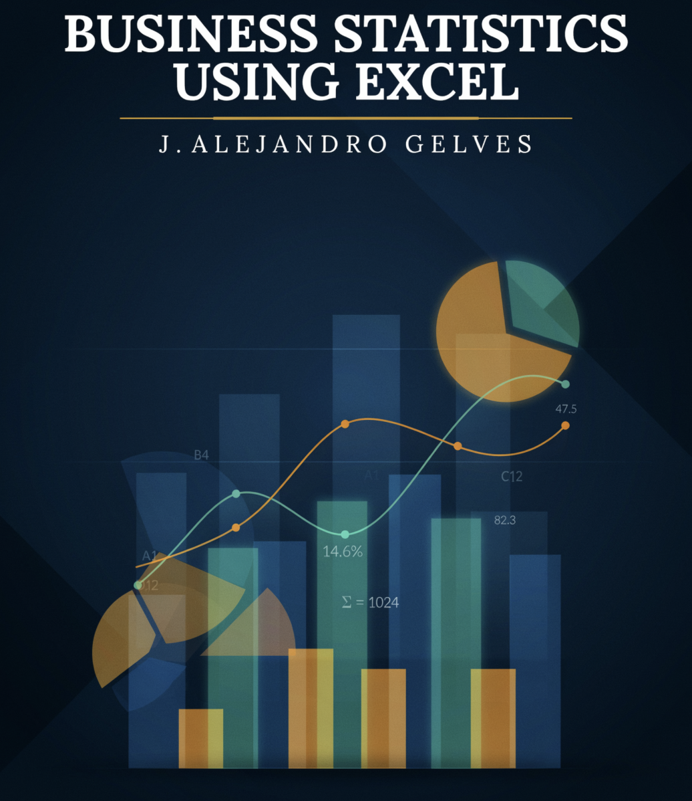

Business Statistics
Introduction

Learn from data.
Decide with confidence.
A hands-on companion to business statistics in Excel. Learn to describe data, model uncertainty, and test hypotheses, with worked examples, downloadable datasets, and interactive graphs.
“Whatever you would make habitual, practice it; and if you would not make a thing habitual, do not practice it, but accustom yourself to something else.” – Epictetus
This book is a companion to a course in business statistics. It teaches the core ideas of statistics and how to apply them in Excel. Each chapter introduces a few concepts, works through examples, and ends with practice problems. The material takes effort, but steady work will get you through it.
I owe thanks to my business statistics students, especially Haipei Liu, Addison Alvine, and Sara Blair, for their feedback and careful reviews. Any remaining errors are mine.
Learning from Data
Statistics is about learning from the world. We want to know how customers behave, whether a new process works, or where a market is headed, but we can never observe everything. Instead, we collect data, a small and imperfect view of what we care about, and use it to draw conclusions about the bigger picture.
That last step comes with a catch. A sample never perfectly mirrors the population it came from, so two analysts with different samples will get different answers. Probability lets us measure how far our data might mislead us. With it, we can test a hypothesis, an idea we hold about the world, and decide whether the evidence supports it or whether we are just seeing noise.
You already reason this way in everyday life. You form impressions from limited experience, update them when new evidence arrives, and try not to be fooled by coincidence. Statistics teaches you to do the same thing carefully.
Why Excel?
Excel is the most widely used data tool in business. Finance, accounting, marketing, and operations teams use it every day to organize data, find patterns, and report results. It is available almost everywhere, and the skills you learn here will be useful in your first internship.
Excel can handle every technique in this book, from descriptive statistics and pivot tables to probability, regression, and hypothesis testing. Each chapter shows you how, with step-by-step instructions, screenshots, and downloadable datasets. You do not need any programming experience.
Excel in the Era of AI?
AI tools can now run an analysis in seconds, but you still need to understand the data and the logic to know whether the results make sense. Working in Excel builds that understanding. You learn to organize information, check your assumptions, and follow a calculation from start to finish. These habits make you a better user of AI, because you will be able to question its output instead of simply accepting it.
Roadmap
The book follows the same path as learning from data. Descriptive Statistics shows you how to summarize, visualize, and explore a data set. Regression introduces tools for measuring relationships between variables and making predictions. Probability gives you a way to model the uncertainty that comes from working with samples. Inference brings these pieces together so you can reason from a sample to the population and test hypotheses. The final chapter, Regression and Inference, uses those tools to judge how reliable a regression model is.
If you are new to spreadsheets, or just want a quick reference, start with the Excel Basics chapter at the end of the book. It covers how Excel organizes data (cells, ranges, worksheets, and the Data Analysis ToolPak) and lists every function used in the book.
How to Use This Book
Every chapter has the same structure. It starts with key concepts, formulas, and worked examples. Next, it shows how to carry out each technique in Excel, followed by an Excel Function Summary. Many chapters include a dataset you can download to follow along, and the online version adds Try it boxes: interactive graphs you can adjust to see a concept in action. Each chapter ends with Exercises. Try each problem on your own before clicking to reveal the answer.
How do I get Excel?
William & Mary students can download Office 365, which includes Excel, at https://software.wm.edu/office_365_d1/.